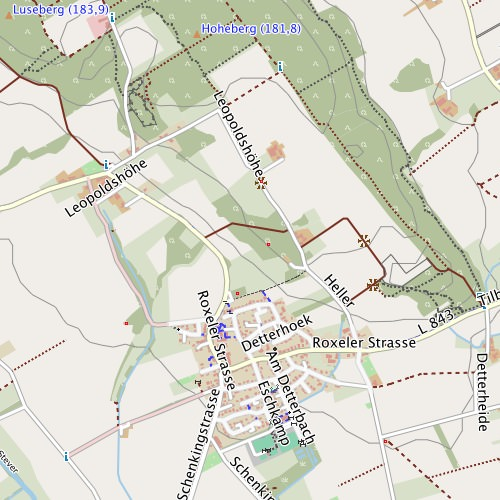

Für die Freizeitkarten gibt es verschiedene Designs (Darstellungen) die die Karten höchst unterschiedlich aussehen lassen. Karte und Design (TYP-Datei) bilden dabei eine Einheit. D.h. nach einem Kartenupdate sollte immer auch das Design aktualisiert werden.

Verschiedene Kartenstile - das optische Erscheinungsbild der Karte wird stark durch das verwendete Design geprägt.
Bern die "Hauptstadt" der Schweiz - links die Standardanzeige "freizeit" und rechts das kontrastreiche Design "small".
Alternatives Kartendesign für BaseCamp installieren:
Nachfolgend ist beschrieben, wie das Kartendesign in Garmin BaseCamp ausgetauscht wird. Anschließend kann die Karte via Garmin MapInstall an das GPS-Gerät übertragen werden.
Vorbedingungen:
- Programm JaVaWa GMTK installiert (OS X, Windows)
- BaseCamp beendet (falls gestartet)
- TYP-Files (Kartendesigns) heruntergeladen
Durchführung:
- JaVaWa GMTK starten
- Karte anklicken (auswählen) -> Extra -> Change or add TYP file -> TYP-File auswählen
- BaseCamp starten
- die zuvor ausgewählte Karte sollte jetzt in neuem Design erscheinen
Karte mit alternativem Design an das GPS-Gerät übertragen:
- Garmin MapInstall aufrufen
- Ziel für die Installation auswählen (z.B. SD-Karte)
- Karte auswählen
- Kacheln auswählen
- Kacheln ans Ziel senden
Design direkt im GPS-Gerät austauschen (Windows):
Für die Benutzer von Windows-Systemen ist dies jetzt per Drag & Drop möglich:
1) Verzeichnis "ReplaceTyp.zip" herunterladen und entpacken
2) GPS-Gerät mit dem Windows-System verbinden
3) in einem Explorer-Fenster den Inhalt des Verzeichnisses "ReplaceTyp" anzeigen
4) in einem weiterem Explorer-Fenster den Inhalt der SD-Karte im GPS-Gerät anzeigen
5) die Datei "gmapsupp.img" auf das Icon der Datei "ReplaceTyp.cmd" ziehen
6) das gewünschte Design auswählen ... fertig
Design direkt im GPS-Gerät austauschen (Linux):
1) Verzeichnis "ReplaceTyp.zip" herunterladen und entpacken
2) GPS-Gerät mit dem Linux-System verbinden
3) Shell-Skript starten: sh ReplaceTyp.sh /pfad_zu_meinem/gmapsupp.img
4) das gewünschte Design auswählen ... fertig
Alternatives Kartendesign in QLandkarte nutzen:
In QLandkarte GT kann das Kartendesign über die entsprechende Auswahlliste (Aufklappmenu) unterhalb der Kartenanzeige ausgewählt werden."
Design "freizeit":

Eigenschaften des Designs "freizeit":
- Zweck: Standarddesign aller Freizeitkarten, welches sowohl am PC (BaseCamp, QLandkarte) als auch am GPS-Gerät "gut" nutzbar ist.
- Eigenschaften: Für viele Flächen werden eher "blasse" Farben mit "mittlerem" Kontrast verwendet. Straßen, Wege und wichtige Symbole werden "signifikanter" dargestellt. Insgesamt orientiert sich das Design am Mapnik-Stil der OpenStreetMap-Karte.
- Besonderheiten: Für wichtige Objekte werden "reine" Farben verwendet. Hierdurch sind die Karten auch für Personen mit Farbsehschwäche "gut" ablesbar.
- Autor: Klaus
Design "outdoor":

Eigenschaften des Designs "outdoor":
- Zweck: Design optimiert für den Gebrauch auf GPS-Handgeräten (getestet mit Garmin GPSMAP 62s).
- Eigenschaften: Alle Flächen werden in "blassen" Farben mit "mittlerem" Kontrast dargestellt. Straßen, Wege und wichtige Symbole werden signifikant dargestellt. Insgesamt ist das Design an Top50- bzw. ICAO-Karten angelehnt.
- Besonderheiten: Für wichtige Objekte werden "reine" Farben verwendet. Hierdurch sind die Karten auch für Personen mit Farbsehschwäche "gut" ablesbar.
- Autor: Roman
Design "outdoor-light":

Eigenschaften des Designs "outdoor-light":
- Wie Design "outdoor".
- Besonderheit: Um den Kontrast zwischen Flächen und Straßen, Wegen und wichtigen Symbolen deutlicher darzustellen, sind die Flächen einfarbig gehalten. D.h. es sind keine Symbole auf den Flächen enthalten (siehe Beispiel Mischwald).
Design "contrast":

Eigenschaften des Designs "contrast":
- Zweck: Das Haupteinsatzgebiet dieses Designs ist das GPS-Gerät.
- Eigenschaften: Die Farben wurden, im Vergleich zum Design "freizeit", etwas "kräftiger" gewählt. Hierdurch können verschiedene "Landabdeckungen" besser auf GPS-Geräten mit Touchscreen erkannt werden. Zusätzlich wurden die Konturen der Straßen verstärkt.
- Autor: Stephan
Design "outdoor-contrast":

Eigenschaften des Designs "outdoor-contrast":
- Wie Design "Contrast"
- Besonderheiten: Um den Kontrast zwischen Flächen und Straßen, Wegen und wichtigen Symbolen deutlicher darzustellen, sind die Flächen einfarbig gehalten. D.h. es sind keine Symbole auf den Flächen enthalten (siehe Beispiel Mischwald). Wege werden kräftiger dargestellt.
- Autor: SwissPoPo
Design "small":

Eigenschaften des Designs "small":
- Zweck: Haupteinsatzgebiet dieses Designs ist das GPS-Gerät - vorzugsweise diejenigen mit kleinem Display.
- Eigenschaften: Die Farben wurden, im Vergleich zum Design "freizeit", etwas "kräftiger" gewählt. Hierdurch können verschiedene "Landabdeckungen" besser auf GPS-Geräten mit Touchscreen erkannt werden. Zusätzlich wurden die Konturen der Straßen verstärkt.
- Besonderheiten: Straßen- und Wegbreiten werden einheitlich dargestellt. Es wird nicht differenziert zwischen "Schmal, Mittel und Breit. Wege und Pfade werden als schwarze Linien dargestellt. Es wird lediglich zwischen Weg (durchgezogene Linie) und Pfad (gestrichelte Line) unterschieden. Bergwanderwege haben zusätzlich eine alternierende Färbung (Blau = T1/T2; Rot = T3/T4; Grau = T5/T6/Klettersteig).
- Autor: Stephan
Download Links für die verschiedenen Designs und Sprachen:
| ReplaceTyp.zip | |
| Design "freizeit": freizeit.TYP |
|
| Design "contrast": contrast.TYP |
|
| Design "outdoor": outdoor.TYP |
|
| Design "outdoor-contrast": outdoorc.TYP |
|
| Design "outdoor-light": outdoorl.TYP |
|
| Design "small": small.TYP |
Viel Freude an den Freizeitkarten ... und viele interessante Touren damit.